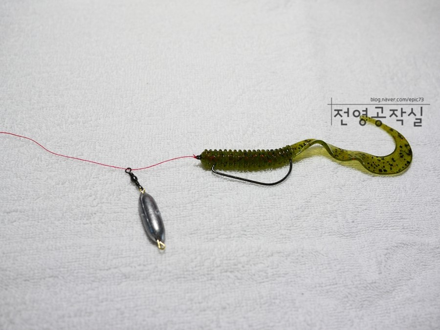

안녕 나는 낚시가 하고 싶은 김영기라고 그중에서도 배스낚시가 제일 하고싶어
배스낚시는 여러가지 방법이 있는데 스피닝이랑 베이트 등등 너무많아서 설명하기 힘들어
소프트베이트도 있고 하드베이트도 있어
그중 내가 제일 많이쓰는 방법은 프리리그야
원줄에 봉돌을 넣고 오픈훅을 연결한 다음 소프트베이트를 바늘에 끼워서 바닥으로 가라앉혀서 드래깅이라는 방법으로하는 낚시를 말해 드래깅은 낚시대를 위로들어서 바닥을 천천히 끌며 지형을 탐색하는 동작을 의미해